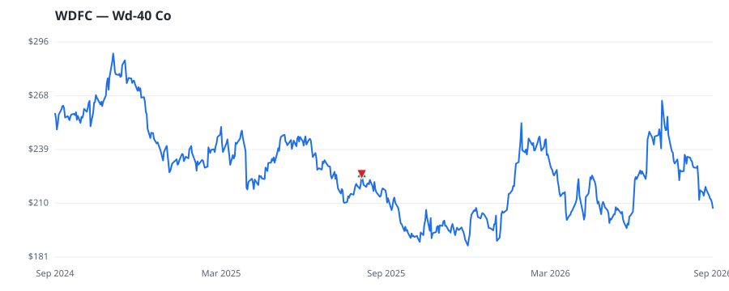

bullish · bearish · n/a — dots: price>SMA10 · SMA10>SMA50 · SMA50>SMA200 · up>down volume (20d)
Materials · mid cap
Members who bought WDFC earned a dollar-weighted -8.1% from their disclosure dates, versus +19.4% for the S&P 500 over the same holding windows (-27.5% alpha).

▲ green = a disclosed purchase · ▼ red = a disclosed sale (plotted on disclosure date)
WD-40 Co is a global marketing organization focused on developing and selling products that solve maintenance and cleaning problems internationally. It offers two product groups: maintenance products, including the flagship WD-40 Multi-Use Product, which serves as a lubricant, rust preventative, penetrant, and moisture displacer, marketed globally; and homecare and cleaning products, mainly sold in North America, the UK, and Australia. The company distributes its products through hardware stores, automotive parts outlets, industrial suppliers, mass retailers, online platforms, and specialty re MISCELLANEOUS CHEMICAL PRODUCTS · website
| Revenue | $620.0M | Net income | $91.0M |
|---|---|---|---|
| Operating income | $103.8M | Diluted EPS | $6.69 |
| Assets | $475.8M | Equity | $268.2M |
| Member | Chamber | Out-performer | Disclosed buys $ | Return on buys |
|---|---|---|---|---|
| Lisa McClain | house | — | $8K | -8.1% |
Disclosed $ figures are bracket midpoints — filings report ranges (e.g. $1,001–$15,000), not exact amounts.
| Fund | Fund alpha vs SPY | Position | % of book |
|---|---|---|---|
| Ophir Asset Management Pty Ltd | +48% | $49M | 4.1% |
Hedge data: SEC EDGAR 13F · ranked funds beat SPY in >50% of their quarters · fund alpha = mirror-portfolio return minus SPY.